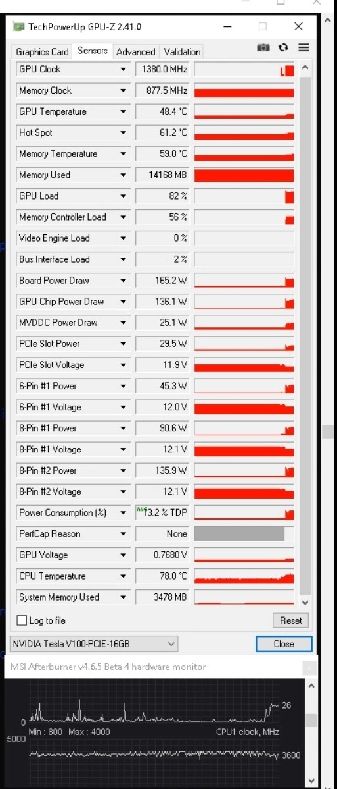
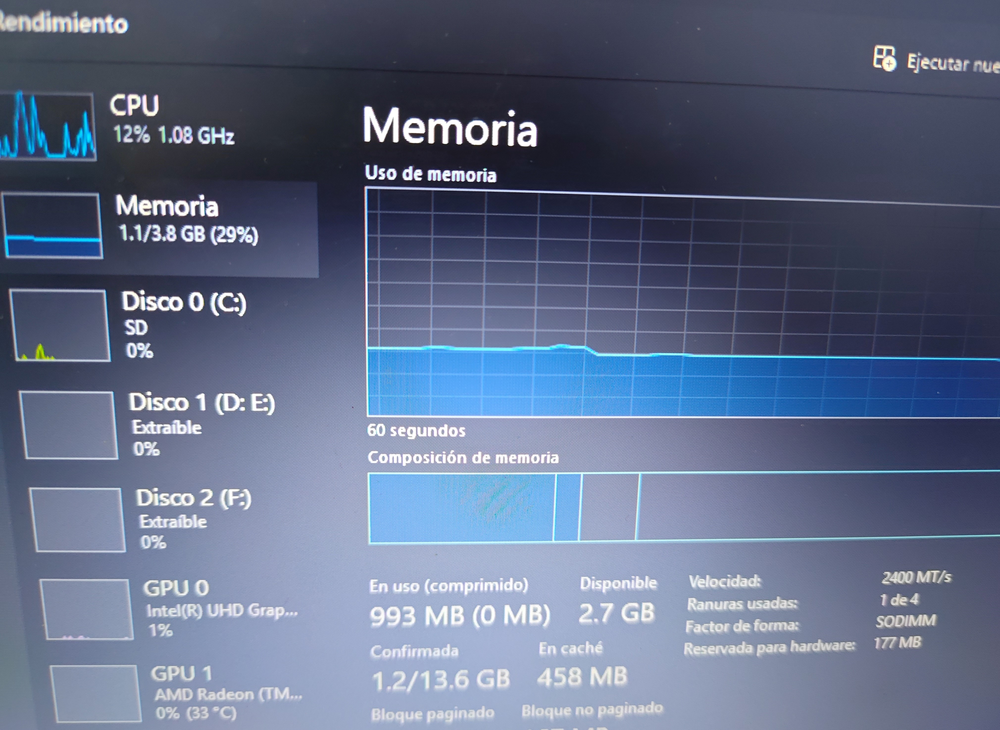
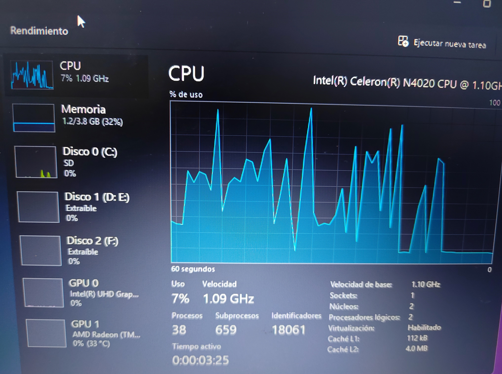
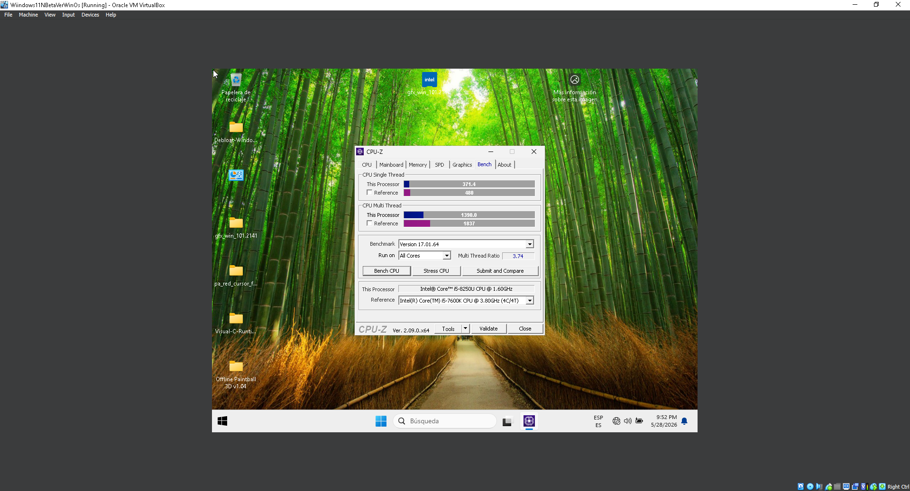

Resumen de evidencia disponible
Imágenes
~4
capturas de telemetría
Videos
4
térmico · inferencia · lógica
Logs CSV
NexCore
sensor data completo
Proyectos cubiertos
4
de 9 documentados
Mainframe eGPU — Tesla V100
2 archivosEstado térmico Tesla V100
Video de monitoreo en tiempo real del comportamiento térmico de la GPU durante inferencia sostenida.

GPU-Z Telemetry
Captura de utilización, VRAM y reloj de la Tesla V100 durante el caso de estudio de inferencia.
NexCore
4 archivosInicializacion Windows 10 Virtualbox Environment - Host Unify Corp Windows 10 Test Time
Video del proceso de inicialización de Windows 10 en un entorno Virtualbox con hardware específico.
VirtualBox en dual screen
VM ejecutándose con renderizado DXGI/DWM en dos monitores externos simultáneos sobre iGPU Intel HD.
RobotNexis — lógica de comunicación
Demostración de las 4 capas de comunicación redundante: hotspot, TCP/IP interno y cifrado local.
HWInfo Sensor Log (CSV)
Registro completo de sensores durante el entrenamiento de 42+ horas — temperatura, voltajes, frecuencias y consumo por ciclo.
Descargar CSVHWInfo Sensor Log En Reposo Estado Antes de Inferencias (CSV)
Registro completo de sensores durante el entrenamiento de 42+ horas — temperatura, voltajes, frecuencias y consumo por ciclo.
Descargar CSVWindows 11 Unify Corp — Asus E210M
3 archivos
Compresión activa — 988 MB
Task Manager mostrando huella de memoria comprimida durante la fase de optimización intermedia, previa al piso de 920 MB.

38 procesos · seguridad activa
Piso histórico absoluto con Defender, Firewall, lsass y RPC visibles y activos en el stack de procesos — validación del §11.5.

Comparación entre I5-8250U vs i5-7600K
Comparacion entre el procesador i5-8250U y el i5-7600K en pruebas en cpu z utilizando WinOsUnify Corp 1.2 Layer 1 en un entorno virtual box sin drivers instalados y utilizando el sistema operativo Windows 11 24h2.
Estas capturas fueron tomadas con solo la primera capa de registro del entorno WinOs Unify Corp activa — sin la inicialización completa del sistema — utilizadas como prueba técnica de estabilidad de partida antes de aplicar las capas adicionales de optimización.
Nota sobre la evidencia
Todo el material en esta página corresponde a capturas y registros directos de las sesiones de prueba documentadas en cada proyecto del portafolio — no son recreaciones ni representaciones ilustrativas.